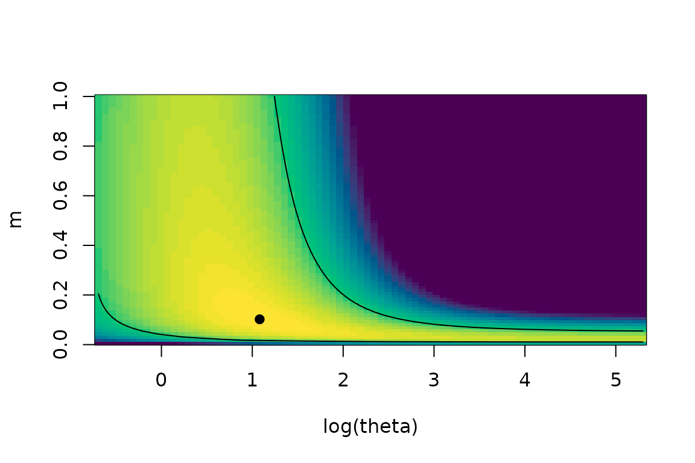

The neutr package does two things for neutral models of
species assemblages:
-
inference: maximum likelihood estimation of the
parameters of the Ewens model (
optim_ewens()), the Etienne model of a local community with dispersal limitation (optim_etienne()), the Pitman model (optim_pitman()) and the multideme model (optim_multideme()); -
generation: fast and exact simulation of typical
species abundance distributions of the Ewens model
(
generate_hoppe_urn0(),generate_hoppe_urn()) and of the Pitman model (generate_pitman_urn()), including for samples of individuals and more.
A species abundance distribution is a vector of positive counts : species, individuals.
Generating a community
Ewens’ model has a single parameter
(the fundamental biodiversity number). generate_hoppe_urn()
returns the abundances, sorted in decreasing order, together with the
expected number of species for these parameters:
set.seed(42)
com <- generate_hoppe_urn(theta = 11.3, J = 234373)
length(com$abundance) # species in this draw
#> [1] 109
com$k # expected number of species
#> [1] 112.8284
head(com$abundance)
#> [1] 19417 18729 17430 15007 14371 13308
sum(com$abundance) # always exactly J
#> [1] 234373
plot(com$abundance, log = "y", xlab = "Rank", ylab = "Abundance", pch = 16, cex = 0.6)Rank-abundance curve of the simulated community.
The generator works with the Griffiths-Engen-McCloskey representation of the model, so its cost hardly depends on the number of individuals:
huge <- generate_hoppe_urn(theta = 100, J = 1e12)
length(huge$abundance)
#> [1] 2339
sum(huge$abundance) == 1e12
#> [1] TRUEgenerate_hoppe_urn0() simulates Hoppe’s urn exactly,
individual by individual (vectorised, so still fast for samples of
millions). It is mostly useful as a reference. It draws random numbers
with the dqrng package, which has its own random stream:
set.seed() does not affect it, use its
seed argument:
a <- generate_hoppe_urn0(theta = 11.3, J = 1e5, seed = 1)
b <- generate_hoppe_urn0(theta = 11.3, J = 1e5, seed = 1)
identical(a, b)
#> [1] TRUEThe Pitman model adds a discount parameter , which gives heavier tails (more rare species) than Ewens’ model:
set.seed(1)
pit <- generate_pitman_urn(theta = 10, sigma = 0.3, J = 1e5)
c(species = length(pit$abundance), expected = round(pit$k, 1))
#> species expected
#> 415.0 500.6Estimating the parameters
optim_ewens() gives the maximum likelihood estimate of
,
which solves
:
ab <- c(234, 87, 34, 5, 4, 3, 3, 2, 2, 1, 1, 1, 1)
ew <- optim_ewens(ab)
ew
#> $theta
#> [1] 2.476993
#>
#> $logl
#> [1] -433.6187optim_pitman() estimates
:
pm <- optim_pitman(ab, init_vals = c(10, 0.1))
pm
#> $theta
#> [1] 0.7110667
#>
#> $sigma
#> [1] 0.2781073
#>
#> $logl
#> [1] -432.4741
#>
#> $converged
#> [1] TRUEComparing the two models
The Ewens model is the Pitman model with
,
so the two are nested and can be compared with a likelihood-ratio test
or AIC. The logl element returned by
optim_ewens() and optim_pitman() is on the
same scale for both functions:
lrt <- 2 * (pm$logl - ew$logl)
c(LRT = lrt, p.value = pchisq(lrt, df = 1, lower.tail = FALSE))
#> LRT p.value
#> 2.2893221 0.1302668
c(Ewens = -2 * ew$logl + 2 * 1, Pitman = -2 * pm$logl + 2 * 2) # AIC
#> Ewens Pitman
#> 869.2374 868.9481(As lies on the boundary of the parameter space, the p-value is conservative; halve it for the usual boundary correction.)
Recovering known parameters
set.seed(2024)
sim <- generate_pitman_urn(theta = 10, sigma = 0.3, J = 1e5)$abundance
fit <- optim_pitman(sim)
round(c(theta = fit$theta, sigma = fit$sigma), 3) # truth: 10 and 0.3
#> theta sigma
#> 14.626 0.267Boundary estimates
When the likelihood has no interior maximum for the data at hand, the estimate lands on the edge of the search interval and the functions issue a warning:
tryCatch(optim_ewens(rep(1, 20)), warning = function(w) conditionMessage(w))
#> [1] "optim_ewens(): every species has a single individual; the likelihood increases with theta without bound (estimate: Inf)."A local community with dispersal limitation: the Etienne model
In Etienne’s (2005) model, a local community of J
individuals receives immigrants from a neutral metacommunity with
fundamental biodiversity number
,
at rate
.
optim_etienne() estimates
from a single sample; on the example of Etienne’s paper it reproduces
his estimates
and
:
zoo <- c(8, 5, 3, 2, 1, 1)
et <- optim_etienne(zoo)
et
#> $theta
#> [1] 7.047969
#>
#> $m
#> [1] 0.2263591
#>
#> $I
#> [1] 5.559197
#>
#> $logl
#> [1] -28.56215
#>
#> $converged
#> [1] TRUE
#>
#> $se_theta
#> [1] 15.10683
#>
#> $se_m
#> [1] 0.3349456
#>
#> $se_I
#> [1] 10.63283
#>
#> $local_maxima
#> theta m I logl boundary
#> 1 7.047969 0.2263591 5.559197 -28.56215 FALSEThe model with
(no dispersal limitation) is the Ewens model, and the logl
values of the two functions are on the same scale:
ew_zoo <- optim_ewens(zoo)
lrt <- 2 * (et$logl - ew_zoo$logl)
c(LRT = lrt, p.value = pchisq(lrt, df = 1, lower.tail = FALSE))
#> LRT p.value
#> 0.3577858 0.5497385(As for the Pitman model,
lies on the boundary of the parameter space and the
p-value is conservative.) When the data show no dispersal limitation,
the estimate of
reaches its upper bound, with a warning, and the Etienne model reduces
to the Ewens model; this is the case for the sample ab used
above:
suppressWarnings(optim_etienne(ab))[c("theta", "m", "logl")]
#> $theta
#> [1] 2.476993
#>
#> $m
#> [1] 1
#>
#> $logl
#> [1] -433.6187
ew_ab <- optim_ewens(ab)
ew_ab
#> $theta
#> [1] 2.476993
#>
#> $logl
#> [1] -433.6187The likelihood itself is given by logl_etienne(). It
depends on the data through the coefficients
,
which are the expensive part of the calculation (their cost grows as
):
compute them once with logkda() to evaluate the likelihood
many times, for instance along a profile:
lk <- logkda(zoo)
m <- seq(0.02, 1, by = 0.01)
plot(m, logl_etienne(zoo, et$theta, m, log_kda = lk), type = "l",
xlab = "immigration rate m", ylab = "log-likelihood")
abline(v = et$m, lty = 2)Profile of the log-likelihood in m, at the estimated theta.
Uncertainty and local maxima
optim_etienne() returns standard errors
(se_theta, se_m, se_I) from the
inverse Hessian, and with ci = TRUE likelihood-ratio
confidence intervals, which are preferable because the likelihood is
often strongly asymmetric. A limit equal to a bound of the search
interval means that the interval extends at least that far:
fit <- optim_etienne(zoo, ci = TRUE)
rbind(theta = c(estimate = fit$theta, se = fit$se_theta, fit$ci_theta),
m = c(estimate = fit$m, se = fit$se_m, fit$ci_m))
#> estimate se lower upper
#> theta 7.0479694 15.1068324 0.81149497 2000
#> m 0.2263591 0.3349456 0.04102535 1The likelihood surface can have several local maxima; all those found
are listed in local_maxima, the global one first:
optim_etienne(c(15, 81, 80, 2, 1, 2))$local_maxima
#> theta m I logl boundary
#> 1 21.747365 0.006867291 1.24466 -195.2637 FALSE
#> 2 1.056303 0.980993441 9290.41505 -195.2851 FALSEData files of the TeTame software
The TeTame software (Chave and Jabot) reads species abundances from a
text file, one value per line, samples being separated by a line
containing &. Such a file is easily read in R. Here we
write the trial file distributed with TeTame 2.1:
file <- tempfile(fileext = ".txt")
writeLines(c(1, 8, 80, 2, 1, 20, 0, "&", 15, 8, 8, 20, 10, 2, 0, "&",
15, 81, 80, 2, 1, 2, 0), file)
x <- scan(file, what = "", quiet = TRUE)
samples <- unname(split(as.numeric(x[x != "&"]), cumsum(x == "&")[x != "&"]))TeTame’s option e estimates
in each sample. TeTame reports the negative log-probability of the
abundance vector, which is
-logl_etienne(..., full = TRUE):
do.call(rbind, lapply(samples, function(y) {
fit <- suppressWarnings(optim_etienne(y))
data.frame(S = length(y[y > 0]), J = sum(y), theta = fit$theta, se_theta = fit$se_theta,
m = fit$m, se_m = fit$se_m,
negloglik = -logl_etienne(y, fit$theta, fit$m, full = TRUE),
n_local_maxima = nrow(fit$local_maxima))
}))
#> S J theta se_theta m se_m negloglik n_local_maxima
#> 1 6 112 1.195285 NA 0.999999990 NA 10.77968 2
#> 2 6 63 2.947770 2.582702 0.102035222 0.120382867 12.22751 1
#> 3 6 181 21.747365 110.037756 0.006867291 0.006534417 13.53646 2TeTame’s option j (Jabot et al. 2008) estimates
in each sample, the regional pool being the sum of the samples: this is
optim_multideme(), with one row per sample (the species
must be in the same order in every sample):
optim_multideme(do.call(rbind, samples), ci = TRUE)[c("I", "se_I", "m", "se_m", "ci_m")]
#> $I
#> [1] 7.419698 5.738001 14.671141
#>
#> $se_I
#> [1] 4.337811 3.235172 9.373103
#>
#> $m
#> [1] 0.06265594 0.08470874 0.07536372
#>
#> $se_m
#> [1] 0.03433568 0.04371438 0.04451975
#>
#> $ci_m
#> lower upper
#> [1,] 0.01858430 0.1636401
#> [2,] 0.02650112 0.2057232
#> [3,] 0.02043186 0.2125176The likelihood surface is computed on a grid with
logl_etienne(), which is vectorised; the contour delimits
the joint 95% confidence region:
y <- samples[[2]]
fit <- optim_etienne(y)
lk <- logkda(y) # computed once for the whole grid
grid <- expand.grid(theta = exp(seq(log(0.5), log(200), length.out = 80)),
m = seq(0.005, 1, length.out = 80))
grid$logl <- logl_etienne(y, grid$theta, grid$m, log_kda = lk)
z <- matrix(grid$logl - fit$logl, 80, 80)
image(log(unique(grid$theta)), unique(grid$m), pmax(z, -10), col = hcl.colors(50),
xlab = "log(theta)", ylab = "m")
contour(log(unique(grid$theta)), unique(grid$m), z, levels = -qchisq(0.95, 2) / 2,
drawlabels = FALSE, add = TRUE)
points(log(fit$theta), fit$m, pch = 19)
Log-likelihood surface of the second sample of the TeTame trial file; the contour delimits the joint 95% confidence region and the point is the maximum likelihood estimate.
The multideme model
optim_multideme() takes a matrix with one row
per deme (local community) and one column per species. The
regional abundance distribution is the sum of the rows. For each deme it
estimates the rescaled immigration rate
and the immigration rate
:
demes <- rbind(
c(44, 37, 34, 5, 4, 3, 3, 2, 2, 1, 1, 1, 1),
c(240, 20, 48, 2, 21, 1, 3, 2, 5, 2, 0, 1, 1)
)
optim_multideme(demes)
#> $I
#> [1] 69.44552 197.91949
#>
#> $m
#> [1] 0.3363867 0.3645467
#>
#> $J
#> [1] 138 346
#>
#> $k
#> [1] 13 12
#>
#> $logl
#> [1] -255.5496 -392.8408
#>
#> $se_I
#> [1] 34.80389 128.98987
#>
#> $se_m
#> [1] 0.1118761 0.1509746Use verbose = TRUE to follow the progress over many
demes.
Expected number of species
kest() is the exact expected number of species in the
Ewens model. kest_gt() and kest_gt0() give the
expected number of species with more than N individuals,
deterministically (an approximation, via an integral) and by
simulation: